2. 产品概述
产品定位：康尼「员工与组织」下的即时激励应用。后台配置勋章、额度、审核与风控；员工在 H5/PC 发放同事认可、浏览热门勋章与动态、查看个人勋章墙并接收勋章消息。当前为可交互原型（内存 mock），用于评审交互而非生产账本。
目标用户：① 运营/HR（后台配置与公司表彰、审核队列）；② 普通员工（C 端发放与被认可）。原型无登录，后台演示用户顶栏为「陈产品」，审核权限常量 DEMO_CURRENT_USER=陈佳，C 端当前用户 ME_ID 对应林晓云。
核心场景：① 配置归属/分类/勋章与月度积分额度；② 员工选勋章、多人、原因、附件提交同事认可；③ 审核员通过并发放或驳回；④ 管理员发布公司表彰直接入账；⑤ 员工看动态、热门排行、个人中心与消息。
主要价值：把口头表扬收成可追溯的勋章+积分发放，并用审核/风控提示约束互刷，不在提交时硬拦截。
6. 用户流程
6.1 同事认可（主路径）
入口：H5 首页 FAB「发放勋章」或 PC 侧栏「发放勋章」→ 选同事认可勋章 → 选 ≥1 人（组织树，排除自己）→ 填原因（≥ minimumReasonLength，默认 10）→ 上传 1～5 个附件（单文件 ≤20MB）→ 确认发放。系统 toast「已提交 N 条认可记录」，重置到选勋章步。若后台开启审核则记录为待审核，否则 {todo} C 端提交不写后台 store，仅为 message.success。
6.2 审核发放
审核员在发放记录点编号/详情/审核 → 抽屉「认可详情」→ 通过并发放（二次确认：向对象发放勋章及积分）或驳回（Modal 必填审核意见）。成功 toast「已通过并发放」/「已驳回」，关抽屉。
6.3 公司表彰
发放记录「发布公司表彰」→ 选人、公司勋章、月份、事由、证明材料 → 确认发放。证明材料经 FileReader 转 DataURL 写入每条记录 attachments。Alert 写明免审核。每人一条记录。发布范围「指定部门」时必选部门 TreeSelect。
6.4 员工浏览
首页热门 → 排行（可选类型/分类/近一个月等）→ 同事认可点人进个人勋章墙，公司表彰点人进光荣事迹。动态卡片点接收人进墙。消息卡片进获得页。个人中心看已获得/未获得（locked）。
7. 后台页面需求
7.1 概览
页面目标：按统计周期掌握待审、已发、积分、异常、启用勋章，并处理待办。
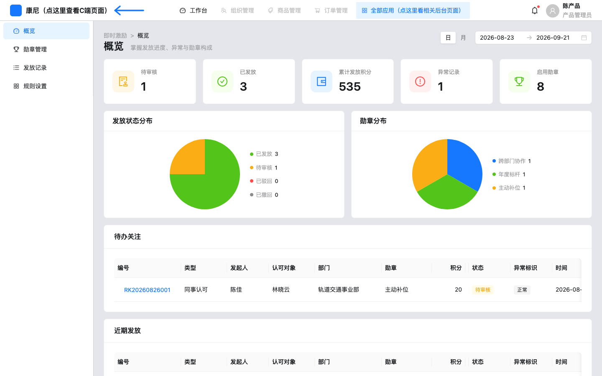
概览-页面-整体布局：标题行含统计周期；下为 KPI、双饼图、待办关注、近期发放。
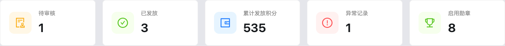
概览-KPI模块-指标卡：待审核/已发放/累计发放积分/异常记录/启用勋章。前四张点击 onNavigate(incentive-records)，启用勋章进 incentive-badges。
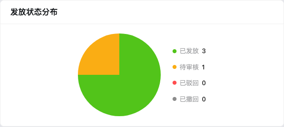
概览-图表模块-发放状态分布：饼图分段：已发放绿、待审核黄、已驳回红、已撤回灰。数据=周期内 recognitions 按 status 计数。
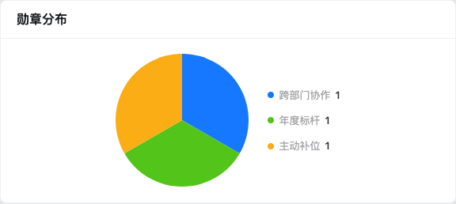
概览-图表模块-勋章分布：仅统计状态=已发放的 badgeName 计数。
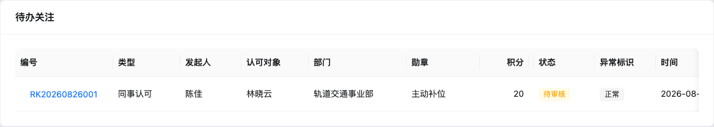
概览-待办模块-待审核表：过滤 status=待审核；空态「暂无待审核记录」。列与发放记录共用组件但 reasonLabelByType 默认 false，理由列标题仍为「事实描述」；操作列仅详情。
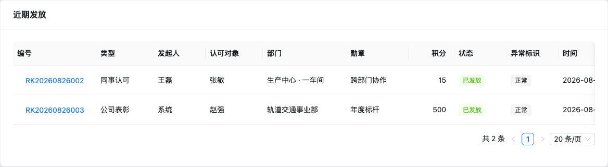
概览-近期模块-已发放表：已发放按 time 降序；分页走 b2bStandards.table。空态「周期内暂无已发放记录」。
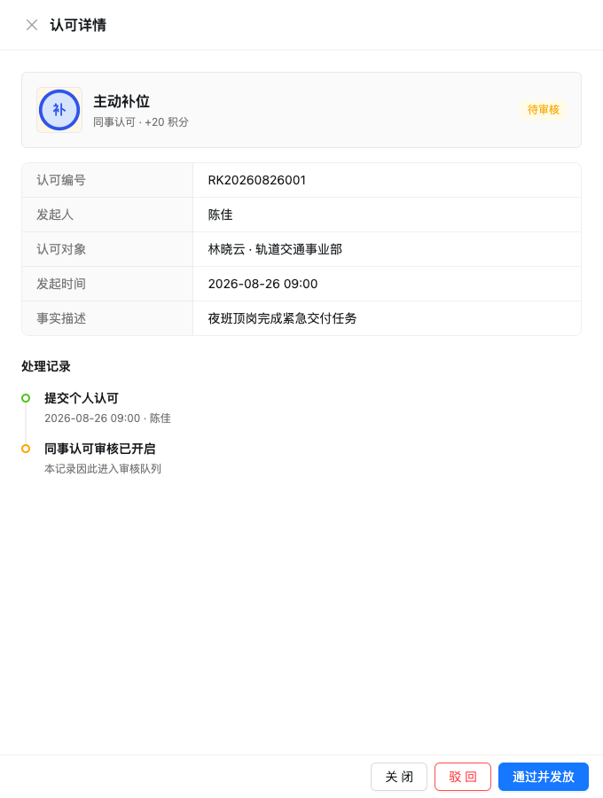
概览-待办模块-认可详情抽屉：与发放记录共用 RecognitionDetailDrawer；待审核且当前用户是审核员时底栏有驳回/通过并发放。
组件显示逻辑
| 组件路径 | 组件类型 | 默认状态 | 显示/隐藏逻辑 | 启用/禁用逻辑 | 数据来源 | 状态变化 | 空/错/加载状态 | 权限/条件控制 |
|---|
| 概览-标题行-统计周期 | RangePicker | 近 29 天～今天 | 始终显示 | 可改 | defaultOverviewDateRange | 改范围重算 KPI/表 | 日期非法则 inRange 视为命中 | 无 |
| 概览-KPI模块-待审核卡 | OverviewKpiCard | 数字 | 始终 | 可点 | computeIncentiveOverviewStats.pendingCount | 点进发放记录 | 0 仍展示 | 无 |
| 概览-待办模块-表格 | Table | 有数据则表 | attentionRows.length | 行内详情 | scoped 中待审核 | 开抽屉 | Empty 暂无待审核记录 | 审核按钮不在此表 extraActions |
操作说明
| 操作名称 | 组件路径 | 触发元素 | 前置条件 | 启用/禁用逻辑 | 用户动作 | 系统响应 | 状态变化 | 成功反馈 | 失败反馈 | 跳转/接口 |
|---|
| 进入发放记录 | 概览-KPI模块-指标卡 | KPI 卡片 | 无 | 始终可点 | 点击 | onNavigate incentive-records | 离开本页 | 无 toast | 无 | hash 切换，无查询参数 |
| 打开详情 | 概览-待办模块-编号链接 | 编号 Button link | 有记录 | 始终 | 点击 | setActiveId | 开抽屉 | 无 | 关联记录不存在时 warning | 内存 |
7.2 勋章管理
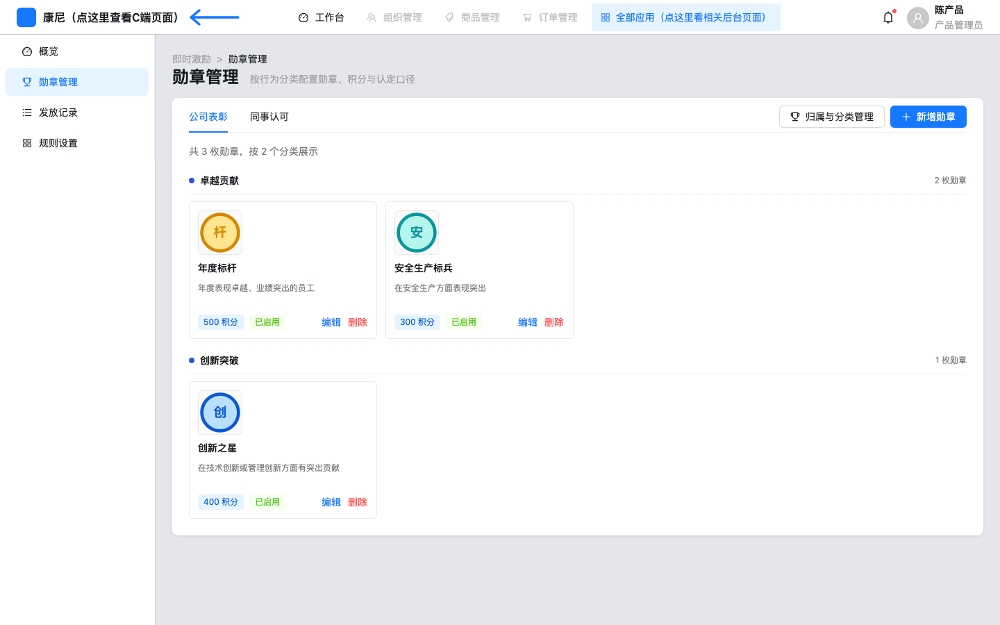
勋章管理-页面-整体布局：Tabs 为归属（公司表彰 / 同事认可）；右上「归属与分类管理」「新增勋章」。
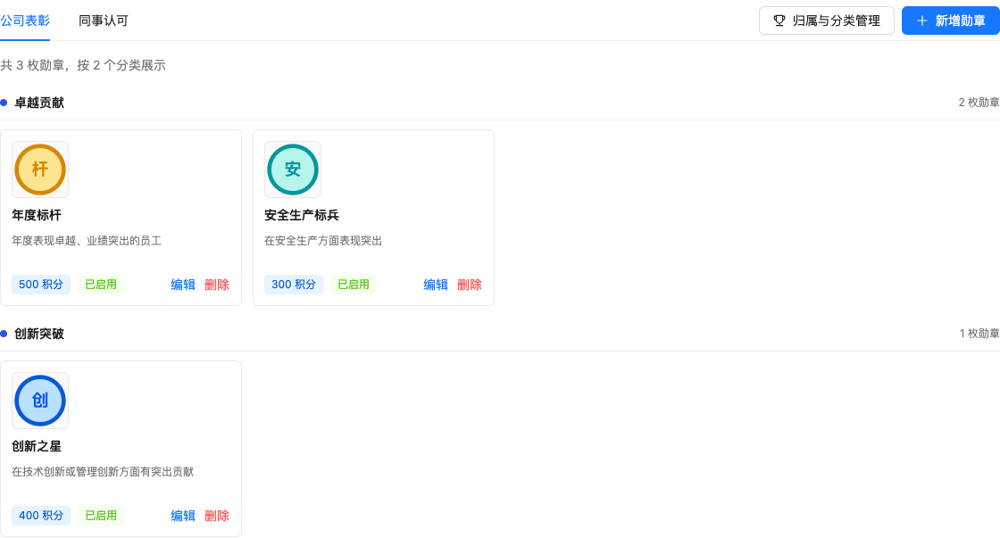
勋章管理-归属模块-Tabs：activeKey=scopeId，写入 hash treeId。分类下无勋章的分组不渲染。
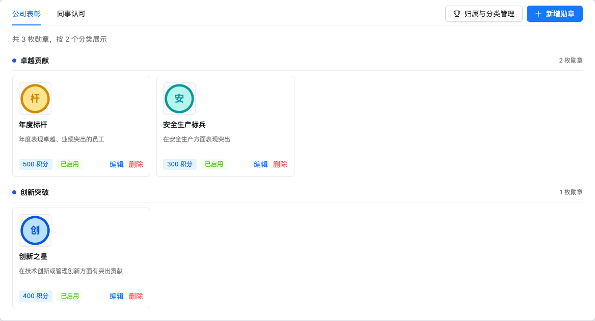
勋章管理-目录模块-勋章卡片：卡片含图标、名称、定义摘要、积分、已启用/停用、编辑、删除。
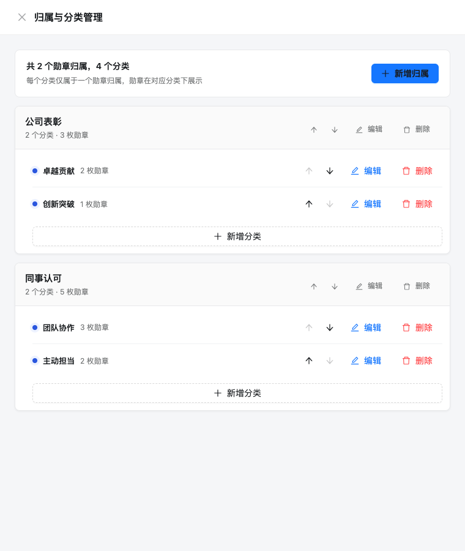
勋章管理-分类模块-归属与分类管理：右侧 Drawer 760px。统计归属/分类数；每归属可上移下移编辑删除、新增分类；分类同样排序与删除。
字段说明
| 字段名称 | 组件路径 | 控件类型 | 是否必填 | 默认值 | 校验规则 | 选项值 | 业务含义 |
|---|
| 名称 | 勋章管理-分类模块-新增/编辑弹窗 | Input | 是 | 空/原名 | trim 非空 | — | 归属或分类显示名 |
操作说明
| 操作名称 | 组件路径 | 触发元素 | 前置条件 | 启用/禁用逻辑 | 用户动作 | 系统响应 | 状态变化 | 成功反馈 | 失败反馈 | 跳转/接口 |
|---|
| 新增勋章 | 勋章管理-标题操作-新增勋章 | primary Button | 无 | 始终 | 点击 | onNavigate incentive-badge-create | 进表单 | 无 | 无 | hash |
| 编辑勋章 | 勋章管理-目录模块-编辑 | 编辑 | 卡片存在 | 始终 | 点击 | incentive-badge-edit/{id} | 进表单 | 无 | 无 | hash |
| 删除勋章 | 勋章管理-目录模块-删除 | 删除 | 无 | 始终 | 确认弹窗 | deleteBadge | 卡片消失 | 勋章“x”已模拟删除 | 取消关闭 | 内存；历史认可保留 |
| 删除归属 | 勋章管理-分类模块-删除 | 删除 | 无勋章占用 | 有勋章则先 warning 不弹确认；至少留 1 个归属 | 确认删除 | deleteScope | Tab 消失 | 已删除 | 仍被使用 / 至少保留一个归属 | 内存 |
| 上移/下移 | 勋章管理-分类模块-排序 | 箭头 | 非首/末 | 首禁用上、末禁用下 | 点击 | 交换 sort | 列表重排 | 已上移/已下移 | 无 | 内存 |
7.3 新建 / 编辑勋章
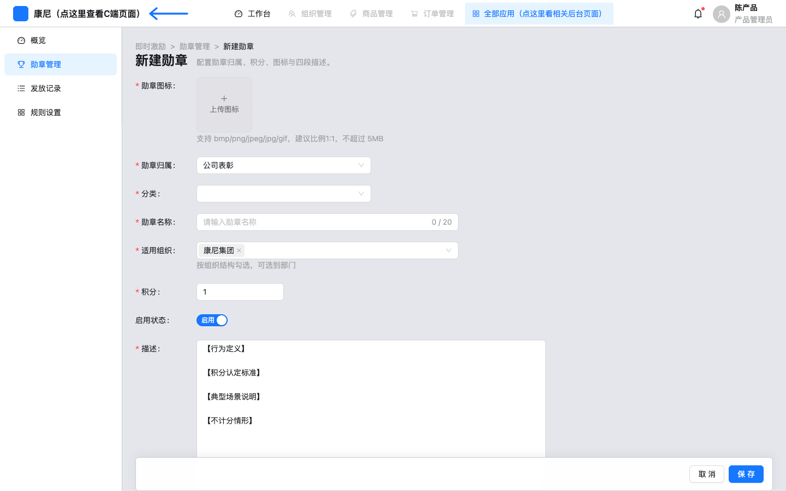
新建勋章-表单模块-整页：横向表单 label 112px。未保存离开走 modal「确认离开？」。
新建勋章-表单模块-勋章图标：picture-card，maxCount=1，beforeUpload 拦真传，读 DataURL。新建必填「请上传勋章图标」。
新建勋章-底栏模块-取消保存：取消 leave；保存 validateFields 后 saveBadge。
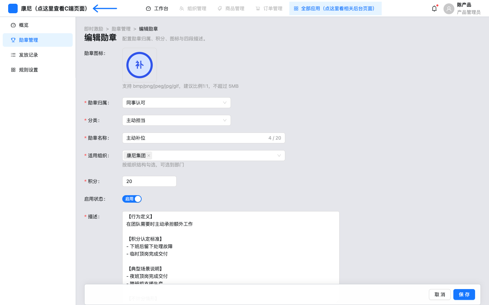
编辑勋章-表单模块-整页：预填 b1 主动补位。编辑模式图标非必填。勋章不存在则 Empty「勋章不存在或已删除」。
字段说明
| 字段名称 | 组件路径 | 控件类型 | 是否必填 | 默认值 | 校验规则 | 选项值 | 业务含义 |
|---|
| 勋章图标 | 新建勋章-表单模块-勋章图标 | Upload | 新建是/编辑否 | 编辑已有 url | 新建 required | 图片 | 展示用 DataURL |
| 勋章归属 | 新建勋章-表单模块-勋章归属 | Select | 是 | hash tree 或首个 scope | required | scopes | 公司表彰则 riskLabel=直接发放，否则低风险 |
| 分类 | 新建勋章-表单模块-分类 | Select | 是 | tree 分类或空 | required；随归属过滤 | 该归属 categories | 卡片分组 |
| 勋章名称 | 新建勋章-表单模块-勋章名称 | Input | 是 | 空 | 非空 trim；max 20；同归属名称不重复 | — | 发放展示名 |
| 适用组织 | 新建勋章-表单模块-适用组织 | TreeSelect 多选 | 是 | 康尼集团 | 数组 min 1 | BADGE_ORG_TREE | C 端过滤 {todo} 未接 |
| 积分 | 新建勋章-表单模块-积分 | InputNumber | 是 | 1 | min 1 整数 | — | 单次发放扣额/入账 |
| 启用状态 | 新建勋章-表单模块-启用状态 | Switch | 否 | 启用 | — | 启用/停用 | 计入概览启用勋章 |
| 描述 | 新建勋章-表单模块-描述 | TextArea 12 行 | 是 | 四段标题模板 | validateBadgeDescription 须含【行为定义】【积分认定标准】【典型场景说明】【不计分情形】 | — | 认定口径 |
操作说明
| 操作名称 | 组件路径 | 触发元素 | 前置条件 | 启用/禁用逻辑 | 用户动作 | 系统响应 | 状态变化 | 成功反馈 | 失败反馈 | 跳转/接口 |
|---|
| 保存 | 新建勋章-底栏模块-保存 | primary 保存 | 校验通过 | loading=submitting | 点击 | saveBadge 内存 | dirty=false 回列表 | 已创建勋章/已保存勋章 | 校验失败滚到首错 | 无 HTTP |
| 取消 | 新建勋章-底栏模块-取消 | 取消 | 无 | 始终 | 点击 | dirty 则确认离开 | 回列表或留页 | 无 | 点取消留页 | onBack |
7.4 发放记录
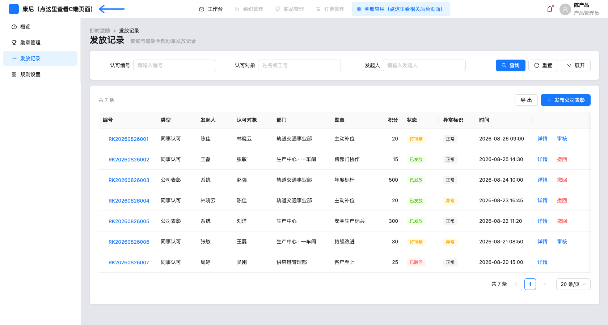
发放记录-页面-整体布局：查询区 + 共 N 条 + 导出 + 发布公司表彰 + 表格。
发放记录-查询模块-默认筛选项：默认三字段：认可编号、认可对象、发起人 + 查询/重置/展开。
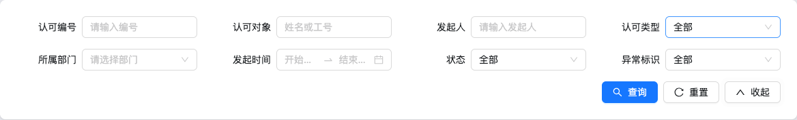
发放记录-查询模块-展开筛选项：展开后增加认可类型、所属部门、发起时间、状态、异常标识。点查询才写入 query。
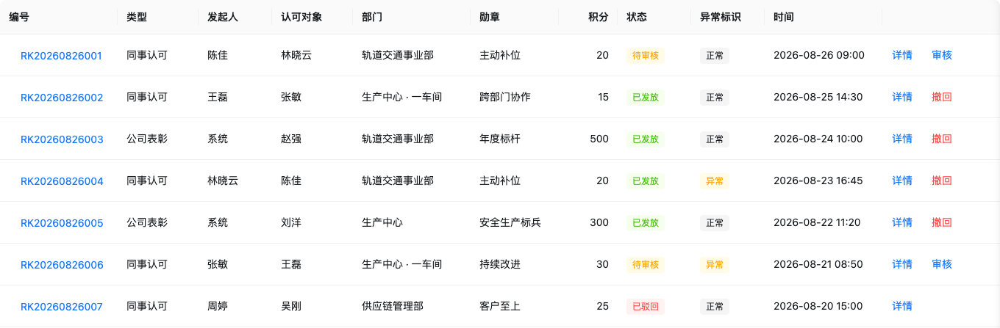
发放记录-列表模块-表格：可见列：编号、类型、发起人、认可对象、部门、勋章、积分、状态、异常、时间、操作。代码第 8 列为「表彰理由 / 认可理由」，无 width 且 scroll.x=1280 时该列宽度为 0，表内看不到文案。
发放记录-列表模块-表头：DOM 含「表彰理由 / 认可理由」，截图中积分与状态相邻，与 0 宽列一致。理由全文在详情抽屉。
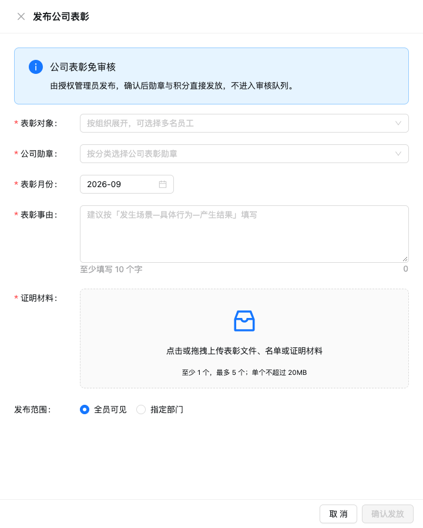
发放记录-表彰模块-发布公司表彰：Alert「公司表彰免审核」。表彰对象 TreeSelect、公司勋章、月份、事由、证明材料、发布范围。确认发放在对象/勋章/附件皆有值时才启用。
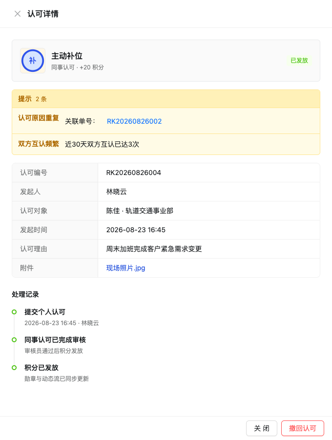
发放记录-详情模块-同事认可详情：同事认可：理由字段为「认可理由」；有附件时 Descriptions 增加「附件」下载链（RecognitionMaterials，download=文件名）。已发放底栏关闭+撤回认可。
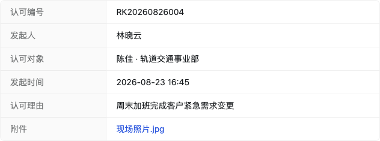
发放记录-详情模块-附件行：RK20260826004 附件「现场照片.jpg」，aria-label「下载 现场照片.jpg」。不渲染图片缩略，仅链接。
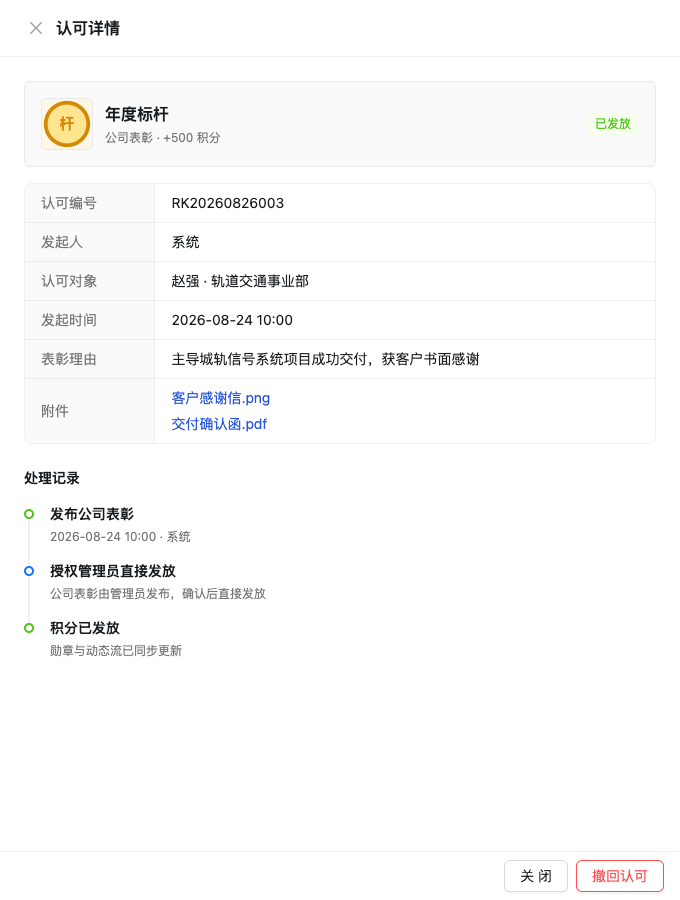
发放记录-详情模块-公司表彰详情：公司表彰：理由字段为「表彰理由」；附件可多条（客户感谢信.png、交付确认函.pdf）。处理线：发布公司表彰 → 授权管理员直接发放 → 积分已发放。
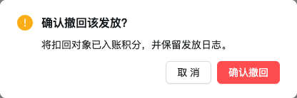
发放记录-列表模块-撤回确认：「确认撤回该发放？将扣回对象已入账积分，并保留发放日志。」确认撤回 danger。
字段说明
| 字段名称 | 组件路径 | 控件类型 | 是否必填 | 默认值 | 校验规则 | 选项值 | 业务含义 |
|---|
| 认可编号 | 发放记录-查询模块-认可编号 | Input | 否 | 空 | trim 包含匹配 | — | 记录 id |
| 认可对象 | 发放记录-查询模块-认可对象 | Input | 否 | 空 | 姓名或工号包含 | — | receiver |
| 发起人 | 发放记录-查询模块-发起人 | Input | 否 | 空 | 包含 | — | giver；公司表彰为「系统」 |
| 认可类型 | 发放记录-查询模块-认可类型 | Select | 否 | 全部 | — | 全部/同事认可/公司表彰 | type |
| 所属部门 | 发放记录-查询模块-所属部门 | TreeSelect | 否 | 空 | 康尼集团不过滤 | ORG_TREE | department includes |
| 发起时间 | 发放记录-查询模块-发起时间 | RangePicker | 否 | 空 | 日界 | — | time inRange |
| 状态 | 发放记录-查询模块-状态 | Select | 否 | 全部 | 用 displayRecognitionStatus | 已发放/待审核/已驳回/已撤回 | 展示态 |
| 异常标识 | 发放记录-查询模块-异常标识 | Select | 否 | 全部 | recognitionMatchesRiskFlag | 全部/异常/正常 | 仅统计已开启规则的 hits |
| 表彰对象 | 发放记录-表彰模块-表彰对象 | TreeSelect 多选 | 是 | [] | 至少 1 人 | INCENTIVE_PEOPLE_TREE | 每人一条 |
| 公司勋章 | 发放记录-表彰模块-公司勋章 | Select | 是 | 空 | required | 归属=公司表彰的徽章 | badgeId |
| 表彰月份 | 发放记录-表彰模块-表彰月份 | MonthPicker | 是 | 当天月份 | required | — | 页面字段；issueCommendation 是否写入 {todo} |
| 表彰事由 | 发放记录-表彰模块-表彰事由 | TextArea | 是 | 空 | ≥ minimumReasonLength | placeholder 来自填写设置 | description |
| 证明材料 | 发放记录-表彰模块-证明材料 | Upload.Dragger | 是 | [] | 1～5；单文件 ≤20MB；jpg/png/pdf/doc/xls | — | 提交时 proofFilesToAttachments 转 DataURL，kind 按扩展名 image|file |
| 发布范围 | 发放记录-表彰模块-发布范围 | Radio | 否 | all | org 时 orgIds 必填 | 全员可见/指定部门 | C 端可见 {todo} 未接 |
| 审核意见 | 发放记录-驳回模块-审核意见 | TextArea | 驳回时是 | 空 | trim 非空否则 warning | — | 写入处理记录 |
| 认可理由/表彰理由 | 发放记录-详情模块-理由 | 文本 | 否 | record.description | recognitionReasonLabel(type) | 同事认可→认可理由；公司表彰→表彰理由 | 详情展示；列表共用一列标题 |
| 附件 | 发放记录-详情模块-附件 | 下载链接列表 | 有 attachments 才显示 | 种子记录含证明文件 | 空则整行不渲染 | name/url/kind | 点击 a[download] 本地下载 DataURL |
操作说明
| 操作名称 | 组件路径 | 触发元素 | 前置条件 | 启用/禁用逻辑 | 用户动作 | 系统响应 | 状态变化 | 成功反馈 | 失败反馈 | 跳转/接口 |
|---|
| 查询/重置 | 发放记录-查询模块-查询 | 查询/重置 | 无 | 始终 | 点击 | 写入/清空 query | 表格过滤 | 无 | 无 | 前端 filter |
| 导出 | 发放记录-工具栏-导出 | 导出 | 无 | 始终 | 点击 | message.success | 无文件 | 已导出发放记录 | 无 | 无 blob |
| 发布公司表彰 | 发放记录-工具栏-发布公司表彰 | primary | 无 | 始终可开抽屉；确认发放需人+勋章+附件 | 填表提交 | issueCommendation 含 attachments | 关抽屉刷新表 | 已生成 N 条公司表彰记录 | 字数/对象/勋章/附件 warning；转码失败则请上传证明材料 | 内存 |
| 下载附件 | 发放记录-详情模块-附件链接 | 文件名 a | record.attachments 非空 | 始终 | 点击 | 浏览器 download | 无状态变 | 无 toast | url 空则提交时已跳过该文件 | 无 HTTP |
| 审核 | 发放记录-列表模块-审核 | 审核 | 展示态待审核且 canReview | 非审核员仍可能点到，warning | 点击=开详情 | 同详情 | 开抽屉 | 无 | 当前账号不是审核员 | 内存 |
| 通过并发放 | 发放记录-详情模块-通过并发放 | primary | 待审核且可审 | 显示 showPendingReview | 二次确认 | approveRecognition | 已发放，关抽屉 | 已通过并发放 | 取消 | 内存 |
| 驳回 | 发放记录-详情模块-驳回 | danger | 同上 | 同上 | 开 Modal 填意见 | rejectRecognition | 已驳回 | 已驳回 | 驳回须填写审核意见 | 内存 |
| 撤回 | 发放记录-列表模块-撤回 | danger 撤回 | 展示态已发放 | 始终对该态 | 确认 | withdrawRecognition | 已撤回 | 已撤回 | 取消 | 内存 |
7.5 规则设置
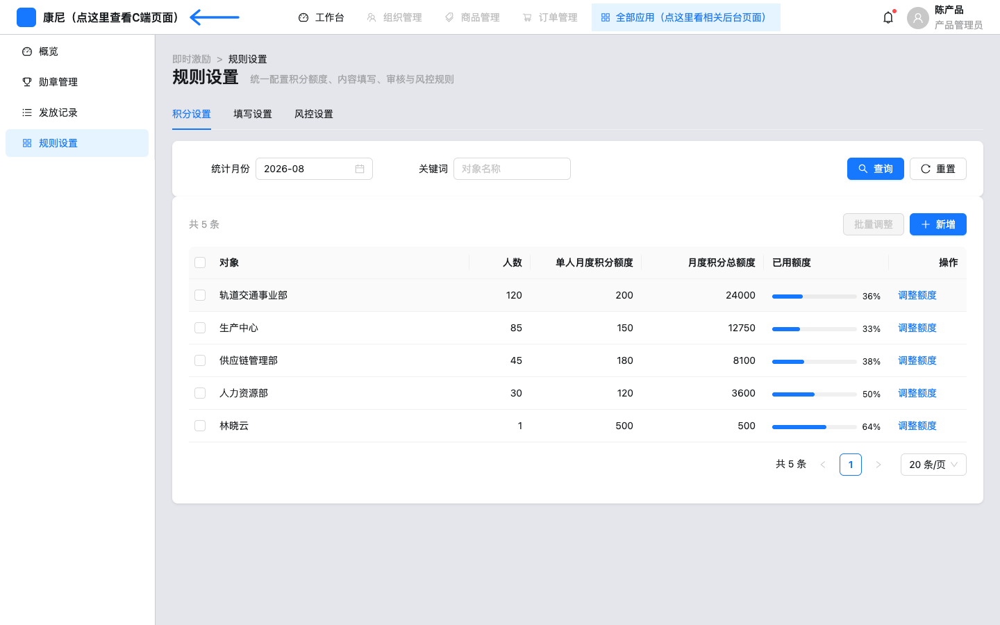
规则设置-积分模块-额度列表：Tab 积分设置。月份选择器目前只进 draft，过滤实际只按关键词（月份未参与 filter）{todo}。
规则设置-积分模块-查询筛选：统计月份 DatePicker month allowClear=false 默认 2026-08；关键词对象名称。
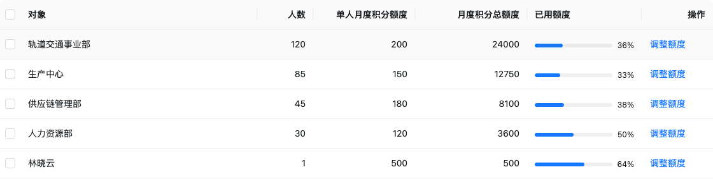
规则设置-积分模块-额度表格：对象、人数、单人月度积分额度、月度积分总额度、已用额度 Progress、调整额度。可勾选，未选时批量调整禁用。
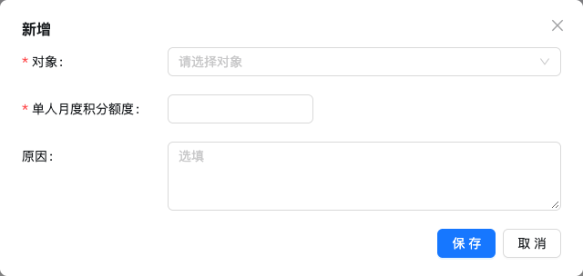
规则设置-积分模块-新增弹窗：对象 TreeSelect（组织或人）、单人月度积分额度必填、原因选填。重复对象 error「该对象已存在额度，请直接调整」。
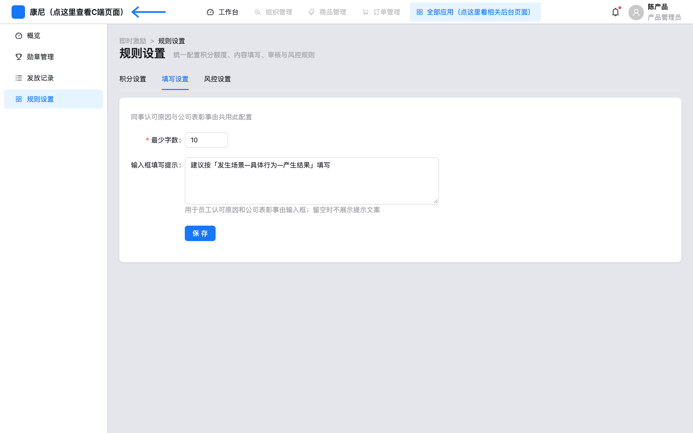
规则设置-填写模块-表单：最少字数 InputNumber min=1；输入框填写提示 TextArea；保存写 settings。副文案：同事认可原因与公司表彰事由共用。
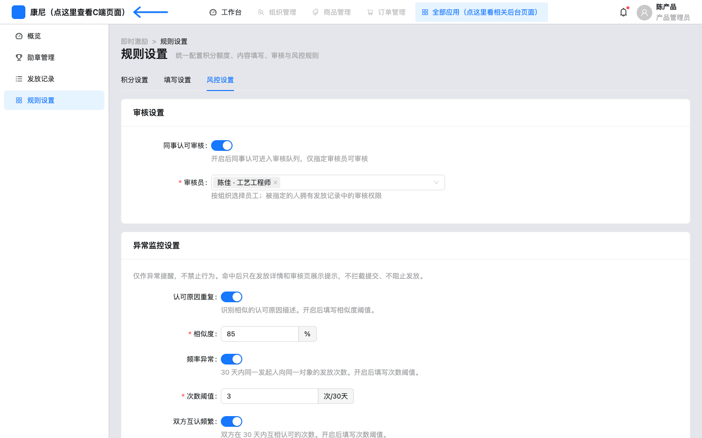
规则设置-风控模块-整页 Tab：审核设置 + 异常监控设置。
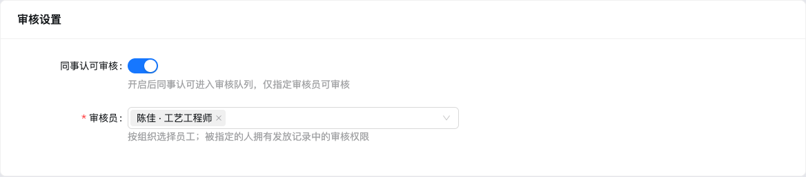
规则设置-风控模块-审核设置：同事认可审核 Switch 默认开；审核员 TreeSelect 默认陈佳。关审核二次确认「关闭后新提交的同事认可将直接发放」。开且审核员空 warning。
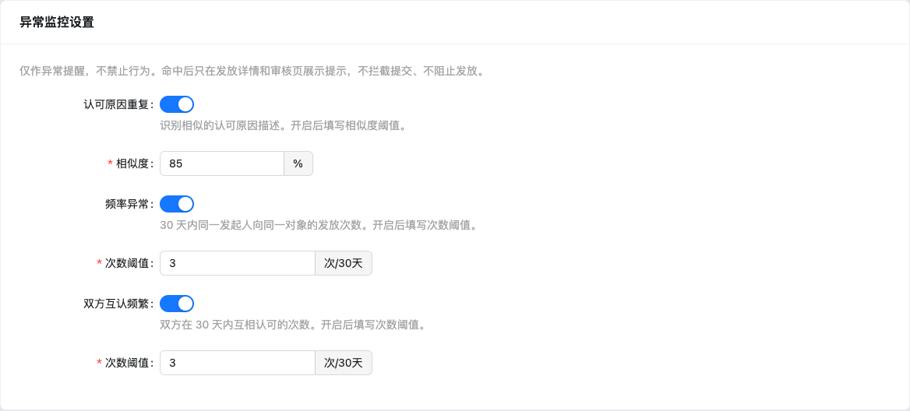
规则设置-风控模块-异常监控设置：文案：仅提醒不禁止。三项 Switch+阈值：相似度默认 85%；频率 3 次/30天；互认 3 次/30天。改开关立即 setIncentiveSettings。
操作说明
| 操作名称 | 组件路径 | 触发元素 | 前置条件 | 启用/禁用逻辑 | 用户动作 | 系统响应 | 状态变化 | 成功反馈 | 失败反馈 | 跳转/接口 |
|---|
| 保存填写 | 规则设置-填写模块-保存 | 保存 | minLength≥1 | 始终 | 点击 | setIncentiveSettings | 内存设置更新 | 已保存填写设置 | 最少字数须大于等于 1 | 无 HTTP |
| 批量调整 | 规则设置-积分模块-批量调整 | 批量调整 | 已勾选 | 无勾选禁用；点时若未选 warning | 填统一额度 | applyQuotaBudgetsByKeys | 清空勾选 | 已批量调整 N 条 | 请先勾选要调整的对象 | 内存 |
| 调整额度 | 规则设置-积分模块-调整额度 | 行操作 | 有行 | 始终 | 弹窗对象 disabled | updateQuota | 预算更新 | 已调整额度 | 校验失败 | 内存 |
| 切换风控规则 | 规则设置-风控模块-异常监控 | Switch | 无 | 始终 | 切换 | 立即写入 rules | 详情异常标识随之变 | 无 toast | 无 | 内存 |
9. PC 页面需求
与 H5 共用屏幕组件，差异：PcActivityShell 顶栏导航；右侧 IncentivePcAside 常驻；发放详情/规则/选人为 Modal 而非全屏 Drawer；首页热门横向滚动且无「查看全部」，但 PC 首页热门有类型 Tabs + 分类 Tabs + 时间 Dropdown；个人中心为统计头+类型 Tab+分类网格（无 H5 轮播）。H5IncentiveApp 仍向 Ranking 传入无用 prop scope=同事认可，筛选状态在组件内，该 prop 不生效。
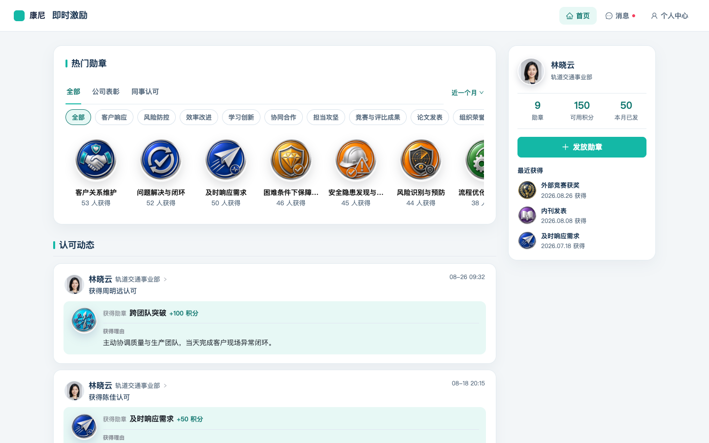
PC首页-页面-双栏布局：主栏热门（含筛选）+动态；右栏与我相关。
PC首页-导航模块-顶栏：首页/消息（未读红点）/个人中心。award 时消息高亮。
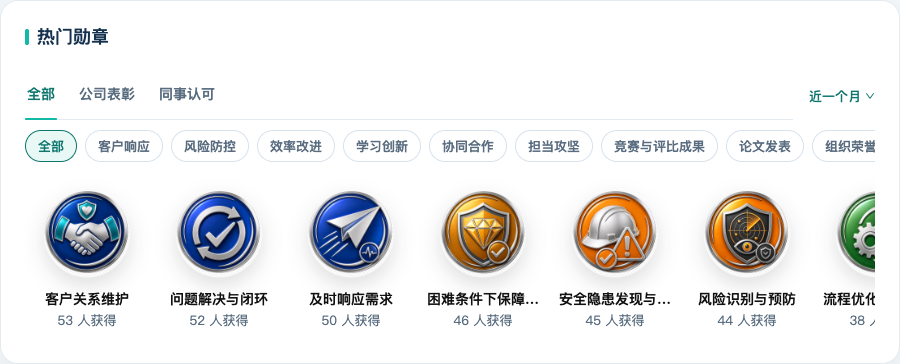
PC首页-热门模块-热门勋章：badgesByType(当前 period, 全部类型) 后按类型/分类过滤，横向 is-scroll。
PC首页-热门模块-筛选：类型 tablist 全部/公司表彰/同事认可；时间「近一个月」下拉；分类 tablist 随类型变。H5 首页无此块。
PC首页-侧栏模块-与我相关：姓名部门、勋章数、可用积分 150、本月已发 50、最近获得最多 3 条。空预览时积分/已发为 0。
PC首页-侧栏模块-发放勋章：block primary，进 issue。H5 无此侧栏按钮。
PC发放勋章-页面-主栏表单：同 H5 两步，弹层为 Modal。
PC热门勋章-页面-整体布局：筛选 Tabs + 勋章条横向滚到 active。
PC热门勋章-筛选模块-类型分类时间：类型/分类为 tablist；时间 PeriodMenu。切筛时若当前勋章不在结果内，选第一条并改 hash。
PC个人中心-页面-勋章收藏：我的勋章 + 分类下已获得/总数。
PC个人中心-页头模块-统计：勋章枚数与累计积分（次数×单枚积分）。
PC消息-会话模块-助手：主栏会话，右栏仍在。
PC个人勋章墙-页面-整体布局：PC 英雄区右侧直接展示勋章/积分 dl。
PC获得页-庆典模块-勋章详情：与 H5 同组件，套在 PC 双栏内。